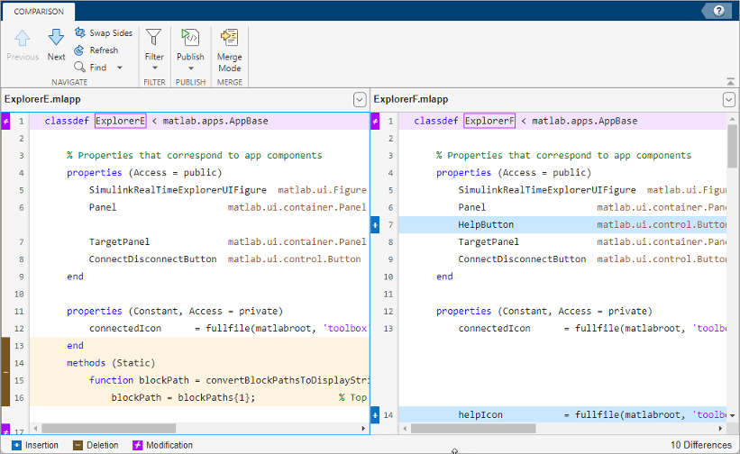
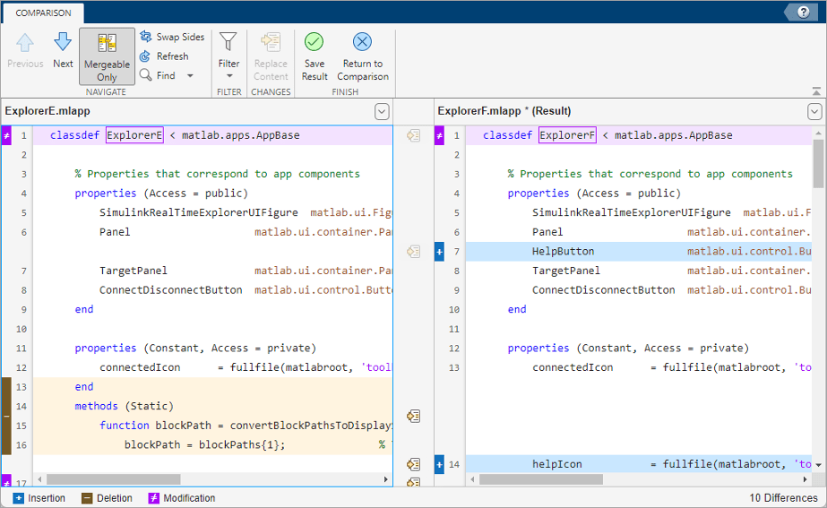

Compare and Merge Apps
You can compare two apps and merge changes between one file and another using the Comparison Tool. The Comparison Tool highlights differences in the code of two apps.
Select Files to Compare
There are multiple ways to select two files and start the Comparison Tool:
App Designer — With an app open in App Designer, go to the Designer tab and, in the File section, click Compare To. Then, select the app that you want to compare the open app to.
Files panel — Select an app file, right-click, and select Compare To. Then, select the file you want to compare the selected file to.
Command Window — Use the
visdifffunction. For example, to compare the two filesExplorerE.mlappandExplorerF.mlappusing thevisdifffunction, typevisdiff('ExplorerE.mlapp','ExplorerF.mlapp').
The Comparison Tool compares the selected files and highlights the differences.
Explore Differences
When you perform an app comparison, a new window opens and displays the two files
side by side. For example, suppose that you have two files
ExplorerE.mlapp and ExplorerF.mlapp with
several differences. When you compare the two files, the Comparison Tool displays
the resulting report.

When comparing apps, the Comparison Tool attempts to match lines and detects code that is added, deleted, or changed. The Comparison Tool displays the total number of differences in the bottom-right corner of the comparison report and highlights the lines that do not match using the colors listed in this table.
| Highlight Color | Description |
|---|---|
| Purple | The line contains differences. |
| Dark Purple | The boxed text is different. |
| Blue | The line exists only in the right file. This can happen when the line is inserted in the right file, or when it is deleted from the left file. The corresponding line in the left file is highlighted using a gray striped pattern. |
| Yellow | The line exists only in the left file. This can happen when the line is inserted in the left file, or when it is deleted from the right file. The corresponding line in the right file is highlighted using a gray striped pattern. |
To step through the results one difference at a time, use the Previous and Next buttons.
For information about how to configure the comparison report, see Compare Files and Folders and Merge Files.
Merge Changes
When comparing apps, you can merge changes from one app to the other. Merging changes can be useful when resolving conflicts between different versions of an app.
To begin merging, on the Comparison tab, click the Merge Mode button. Then, to replace content from the right pane with content from the left pane, click the button located next to the line you want to merge. You also can select a difference and, in the Comparison tab, click the Replace Content button.

The right pane contains the merged result. An asterisk next to the merged file
name in the right pane (ExplorerF.mlapp*) indicates that the file
contains unsaved changes.
To undo a replacement, click the Undo button between the modified lines or on the Comparison tab. To revert all merges and start again, click the Refresh button. You also can click the Refresh button to update the comparison report after making changes to and saving the files in App Designer. Refreshing discards all merged changes.
To save your changes and return to the comparison report, click the Save Result button. To return to the comparison report without saving changes, click the Return to Comparison button.
Tips for Successful Merging
You can merge changes only in editable code. Sections of code with a white background are editable. Examples of editable sections include the body of functions that you define (such as callbacks and helper functions) and the definitions of custom properties. Sections with a gray background contain non-editable generated code and therefore cannot be merged. If a change spans both an editable and a non-editable section, you cannot merge it.
You can merge changes only from left to right. This makes the order of the files in the Comparison Tool important.
If neither app contains changes in the generated code, place the file containing the changes that you want to merge in the left pane. You can merge only from left to right. To swap a file from the left pane to the right pane, click the Swap Sides button before you start merging. Clicking the Swap Sides button reverts any merges already made and creates a new comparison report for the original files.
If one of the apps contains changes in the generated code, place the file containing the generated code that you want in the merged result in the right pane of the Comparison Tool. To swap a file from the left pane to the right pane, click the Swap Sides button before you start merging.
If both apps contain changes in the generated code, those lines of code cannot be merged in the Comparison Tool. To merge the files, use App Designer to interactively apply the desired changes to the app